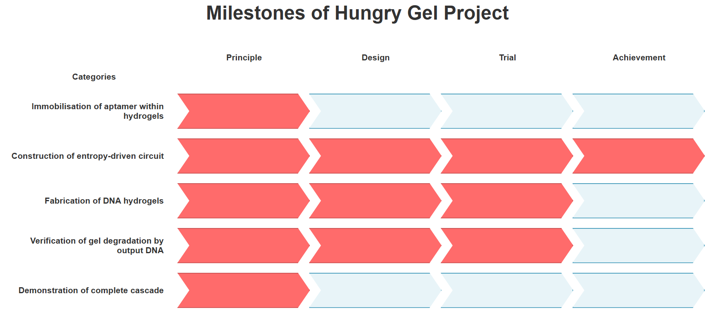

Discussion
Evaluation of Milestones

Fig.1 Milestones achieved in this project
The achievement level of this project is shown in Fig.1
Summary of Experimental Results and Design Issues
Mixing the four types of DNA designed for the gel did not result in a visible gel. From the results of PAGE electrophoresis, it is considered that the cross-shaped motifs were formed as designed, and DLS experiments showed that the motifs assemble into structures several micrometers in size.
Using DLS (experiment 5 ~ 6) and agarose gel electrophoresis (experiment 8 ~ 9), we investigated the changes in these micrometer-sized structures upon the addition of the entropy-driven circuit output, fuel, and buffer (experiment 7 ~ 9). In all cases, the micrometer-sized structures decreased, but there were no significant differences among the changes. This suggests that the DNA in the gel was not bound through complementarity, but was simply aggregated, and that the decrease was not due to the output breaking the gel’s crosslinking structure, but rather due to the dispersion of the aggregated DNA caused by dilution in solution.
Two possible causes for this are considered.
The first possible cause is that single-stranded regions which act as toeholds for dissociation were introduced between the binding sites of the motifs. These regions are more flexible than double-stranded regions. Because the hybridization rate between sticky ends gets slower[1], gel formation becomes difficult.
The second possible cause is that the sticky ends are not self complementary, resulting in only half of the possible sticky end pairs being able to bind. In the figure below, in the case of self complementary sequences, sticky end 1 can bind to 1, 2, 3, and 4, whereas in our design, sticky end 1 can bind only to 2 or 4, reducing the number of binding combinations by half. This also makes it difficult for gels to form.

Fig.2: Example of a gel motif with the toehold position changed
Improvement Plans
For the two issues mentioned above, we propose the following improvement plans.
For the single-stranded regions, one possible solution is to change the position of the toehold so that no single-stranded region remains. By swapping the positions of domain T’ and B’ from T’-B’ to B’-T’, as shown below, it is expected that the decrease in hybridization rate can be prevented.
Fig.3: Example of a gel motif with the toehold position changed
For the combination of sticky ends for binding, another possible approach is to use self-complementary sequences for the sticky ends of the gel. Research on DNA hydrogels involving intermolecular interactions has reported numerous examples utilizing self-complementary sequences[2][3].
However, in that case, the output sequence in the entropy-driven circuit will change, and the circuit must be redesigned accordingly. And carefully examining whether the circuit can still function properly even when self-complementary sequences are included, the issue of motif connection is improved.
Alternatively, rather than creating a gel from a DNA motif, DNA can be used as the cross-linking agent. This approach enables gelation and dissolution even with a lower DNA concentration compared to the motif used in this study. In fact, research has been published on a hydrogel in which acrylamide is cross-linked with DNA, and this gel dissolves in response to E. coli.
As a next step, it would be useful to perform model experiments using microbeads modified with the catalyst sequence to demonstrate uptaking target before using aptamers.
At the current phase, among the three main functions of macrophages, the first one—recognition—has not yet been examined. To achieve the function of recognition, the aptamer needs to be selected for target bacteria. And the catalyst sequence needs to be designed and its connection to the entropy-driven circuit needs to be experimentally verified.
Future
Future Development
After realizing the mechanism by which the output disrupts the gel network, we will attempt experiments to dissolve the gel through the entropy-driven reaction. The dissolution of the hydrogel, triggered by the release of an output strand from an entropy-driven circuit, will be examined upon the addition of a catalyst to a solution containing the hydrogel, substrate, and fuel.
Subsequently, the localized dissolution of the hydrogel in proximity to target bacteria will be investigated. At this preliminary stage, in the absence of an incorporated aptamer sequence, microbeads functionalized with the catalyst sequence will serve as a proxy for the target bacteria.
Furthermore, this research aims to engineer the hydrogel to facilitate bacterial entrapment. This objective can be achieved by introducing "connecting strands" designed to hybridize with both the exposed domain B and the single-stranded regions of the output strand, thereby inducing re-gelation of the hydrogel post-reaction.
The ultimate goal is to integrate an aptamer sequence specific to a selected target bacterium into the DNA hydrogel framework. This will enable the verification of the entire process, from target recognition to capture, to confirm the successful entrapment of the bacteria within the re-solidified hydrogel.
Outlook
If the functions targeted in this project are realized, practical applications of this hydrogel can be expected. To be specific, by introducing this hydrogel into the body, it is possible to physically capture and neutralize specific target bacteria or viruses. By using aptamer sequences matched to the target bacteria, this can become a groundbreaking therapeutic method that does not rely on drugs, and our hydrogel can be called an artificial macrophage.
Furthermore, by using it in combination with drugs, it is also possible to enhance their efficacy. For example, against antibiotic-resistant bacteria, there is a possibility that their proliferation can be suppressed by administering antibiotics after they are physically captured by the hydrogel.
Reference
[1] Taehyun Lee, Sungho Do, Jae Gyung Lee, Do-Nyun Kim and Yongdae Shin. (2021). ”The flexibility-based modulation of DNA nanostar phase separation”. Nanoscale, 13:17638-17647. https://pubs.rsc.org/en/content/articlelanding/2021/nr/d1nr03495b
[2] Udono, H., Gong, J., Sato, Y., & Takinoue, M. (2023). DNA droplets: intelligent, dynamic fluid. Advanced Biology, 7(3), 2200180.
[3] Xing, Z., Caciagli, A., Cao, T., Stoev, I., Zupkauskas, M., O’Neill, T., ... & Eiser, E. (2018). Microrheology of DNA hydrogels. Proceedings of the National Academy of Sciences, 115(32), 8137-8142.
[4] Mann, H., Khan, S., Prasad, A., Bayat, F., Gu, J., Jackson, K., ... & Filipe, C. D. (2025). Bacteriophage‐Activated DNAzyme Hydrogels Combined with Machine Learning Enable Point-of-Use Colorimetric Detection of Escherichia coli. Advanced Materials, 37(3), 2411173.